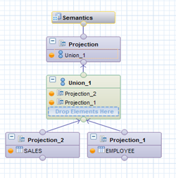

Replace a data source in a calculation view with another data source in the catalog object without performing a delete operation, and retain the semantic information of the changed node.
For example, in the below calculation view, if you want to replace the data source, Projection_1 of Union_1 with another data source in the catalog object, then you can do it by executing the below procedure.
